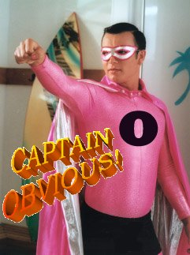

Ok... i got bored after making 2 sig's for my names on some fourms and thought i may as well offer my services to people who need a sig or want a new one, or hell, just want to see what i can come up with... oh and by the way... the sig down below is my latest work.
Well...... I do like mine, but could you make N with throwing stars in hand for me?
I mean an avatar.
I mean an avatar.
Yours is poo Razorstar!
Yours is poo Razorstar!
Ah, the ever-mature reasoning of Red Reamer.
I'm actually a moderatly known sig maker over on newgrouds:
Ah, the ever-mature reasoning of Red Reamer.
Hey, if you can find fault in my chain of logic, then I implore you to go public.
Hey reamer? is that a Domo?
Domo Kun it is.
A Domo? You mean there are more of them?
OMG! Where can I find them!!???
OMG! Where can I find them!!???
In my pants.
Awesome. So are you making me one RR?
Sure.
i like Razorstar's better. the variation of his is a nice effect, even if is unnoticable, and yours is a bad size. not bad, just.... not my type of size.
I'm used to my last forum. That was ideal sig size there...
I don't like the font in the one I made, but eh.
I don't like the font in the one I made, but eh.
I prefer RR's Razorstar sig pic.
I feel like making a sig, I think I will right now 
EDIT: Finished You can either save the av and upload it or just use it from my server
You can either save the av and upload it or just use it from my server


EDIT: Finished
You can either save the av and upload it or just use it from my server Eldrial, you gotta admit that those kick ass?
Wow. That pwns.
And nowwwwww I'm usin it!
Thanks for the other ones Eldrial. They were cool too!
Thanks for the other ones Eldrial. They were cool too!
Cool, cool. And You are welcome
Eldrial, you gotta admit that those kick ass?not quite sure you directed it at me, but it sure does.
That reminds me an awful lot of -HC- Capt's sig...
Who is -HC- Capt? What did his signature look like? If you want, I can upload the psd and all to show that I didn't edit the sig, heck Idon't even know what it looks like, I made it purely from scratch.
Oh, I didn't think you copied his, or stole it or anything. I just meant that this reminded me of it. Anyway, he's changed his sig since then. He was a really annoying noob-type guy, by the way.
Like Thumpa or Ninja Bot?
What an asshole. I mean his grammer sucks, he swears too much, he hates 654321, and he swears too much!
Thank god that guy disappeared..... and i am working on that avatar razor... if you still want it, cause i saw that yoy made a new one... and what do you guys think of my latest sig?
Thank god that guy disappeared..... and i am working on that avatar razor... if you still want it, cause i saw that yoy made a new one... and what do you guys think of my latest sig?
Pretty cool.
Btw, I made the signature and avatar...
Are you working on mine yet Gohan?
I don't want to rush you, but I really like to have cool stuff.
I don't want to rush you, but I really like to have cool stuff.
Sorry, I finished it a while ago, I noticed I sucked at animation

That link led me to an interesting old topic or two, and you know what it made me notice?
I'VE STOPPED BEING FUNNY! Seriously, there was some clever stuff in there, and I suddenly realized that none of still comes out. Thats why new people don't tend to like me as much as older ones: the veterans saw me when I was good at this, and the new ones didn't.
I'VE STOPPED BEING FUNNY! Seriously, there was some clever stuff in there, and I suddenly realized that none of still comes out. Thats why new people don't tend to like me as much as older ones: the veterans saw me when I was good at this, and the new ones didn't.
I think your fine, but can be harsh sometimes.
Besides, your humor and cleverness come out in your comics
Gohan, it's okay, but I don't like it more then my current one.
Besides, your humor and cleverness come out in your comics
Gohan, it's okay, but I don't like it more then my current one.
i know i do. maybe someone's getting a little old. losing his touch.
Woah now mine looks noobish! I knew I shouldn't have stayed with the razor theme. Random is always better. Nice work Gohan.
I decided to make myself a new sig, I think it came out nicely. Better than my other one, at least.
ACT the crown shouldn't mold into the o. Other than that, it looks way better than your old one
Never! The crown must mold into the O! It signifies my awesomeness.
*desperatly wishes he had access to PS and Flash at home*
*kicks dirt aimlessly in furstration*
*walks away*
well not really walks away. I'll get it in the fall when I go to school so WOO! I think RS's goes way way way too fast. It's impossible to see, which is a shame because it's really really pretty.
Either way... If someone wants to make me an avy, I'm all for it... I would like one that has nothing to do with N, but still just cool. And if you feel inclined or compelled, a sig to match would be cool.
Not in anyneed a desperate request... I like what I have, and I can always go back to Grunty if I get sick of my avy now, but A new avy would be cool.
*kicks dirt aimlessly in furstration*
*walks away*
well not really walks away. I'll get it in the fall when I go to school so WOO! I think RS's goes way way way too fast. It's impossible to see, which is a shame because it's really really pretty.
Either way... If someone wants to make me an avy, I'm all for it... I would like one that has nothing to do with N, but still just cool. And if you feel inclined or compelled, a sig to match would be cool.
Not in anyneed a desperate request... I like what I have, and I can always go back to Grunty if I get sick of my avy now, but A new avy would be cool.
Why are you mad? Your Sig is omni awesome!
Oh I love my sig... but usually people make a sig an avy to match because they make the avy from the (a la yours). But my avy is lacking... it might be time to go back to grunty... it might.
Well.....you could or you could make one to match.

I was waiting for dhNINJA to make me an animated avatar, and pariah for my signature, but I like your work.
Would you consider making me one?
Would you consider making me one?
How bout
this?

Edit: That's easily the most annoying thing I've ever made. Even more annoying than Disco N!

this?
Edit: That's easily the most annoying thing I've ever made. Even more annoying than Disco N!

RR... The M is nice man, thanks...
So how do you start your PS images. I mean I know you use PS and a lot of filters (LV told me) but still man, i've goofed around on PS filters for 5 hours and never once got anything like that.
So how do you start your PS images. I mean I know you use PS and a lot of filters (LV told me) but still man, i've goofed around on PS filters for 5 hours and never once got anything like that.
those rock!
but I can't use them unless there's a link...
can I have an animated signature with N?
Maybe similar to RR's (which is the coolest thing ever)
but I can't use them unless there's a link...
can I have an animated signature with N?
Maybe similar to RR's (which is the coolest thing ever)
I usually start with some brushes. The thing with filters is, they have to be done in the right order, or you'll get a jumbled mess. Sometimes I'll just start with Clouds, or a black screen. Use the Lensflare, and try some filters on it. Also try Good-Tutorials.
Oh and Trodgor, the links are both there you twit. And sorry, but I don't have the time to make anything else, school is back and all
Oh and Trodgor, the links are both there you twit. And sorry, but I don't have the time to make anything else, school is back and all
oooh, i use Good-Tutorials also. got it in my favorites. it's great tutorials for tricky things such as fire, some fancy effects like that.
Okay, that makes sense. I never liked or used brushes... which is probally how you get started with the thin lines and loops. I usually started with clouds of varrious colors, then would owrk from there using lighting effects and lens flares to create weird 3d pieces.
It sounds like if you had the programs, you would have the best Sig there ever was.
So.... Gonna use my av?
Man, I can't believe i'm here asking this but.. here it goes!!!
As all you can see, my sig. sucks, so if Gohan or Red Reamer would't mind, I would like to you to make a new one for me??
Thanks, i'll apreciate it.
As all you can see, my sig. sucks, so if Gohan or Red Reamer would't mind, I would like to you to make a new one for me??
Thanks, i'll apreciate it.
Sure! I just whipped this up earlier, so your name is kinda stuck on it. If you don't like I'll make one specially for you

Or perhaps in Red?

Or perhaps in Red?
Thanks for the work.
I know that my name does not sugest anything ( faneca is actually a fish in my language(no no, forget the fish )) but if you could just writte bigger letters it would be nice.
in my language(no no, forget the fish )) but if you could just writte bigger letters it would be nice.
And huh... maybe you could use more red colour") .
.
Thanks again!
EDIT: Red is much better, thanks. Just one more thing. I would prefer j f and not J F since my nickname changed here some days ago... ANd, another re-thanks.
I know that my name does not sugest anything ( faneca is actually a fish
in my language(no no, forget the fish )) but if you could just writte bigger letters it would be nice.And huh... maybe you could use more red colour
.Thanks again!
EDIT: Red is much better, thanks. Just one more thing. I would prefer j f and not J F since my nickname changed here some days ago... ANd, another re-thanks.
Like this?

All right.
Thanks a lot for your patiente. .
Thanks a lot for your patiente.
.Glad to help
Please don't tell me this topic is dead?.... 
Why do you want a sig?
 That would be very cool if you could do one..
That would be very cool if you could do one..Plus, I'm sure you'd do it a lot faster than my brother. He spends a weeks "trying to find the right font"
15 minute job. Do you like?

Or

Needs stroke. Well they both need a bit of fixing. Tell me which one first. If any.
Or
Needs stroke. Well they both need a bit of fixing. Tell me which one first. If any.
Fifteen minutes?! FIFTEEN?!
Hell, you create these FAST.
And yes. I love. How do you do it?
EDIT: I think I like the greeny kinda one better.
Hell, you create these FAST.
And yes. I love. How do you do it?
EDIT: I think I like the greeny kinda one better.
It's all in the brushes.
So the top one? As is? Or should the stroke be bigger/diff font, etc.
So the top one? As is? Or should the stroke be bigger/diff font, etc.
Speaking of sigs, RR, I just noticed that there's a mistake in yours. The bottom-right corner is not the same as the other 3.
No, I meant the bottom one, the green one.
Could the text be slightly bigger?
Could the text be slightly bigger?

I dunno how you manage to whip up this stuff in such a short time.
And unless you think there is anything more to be done, its perfect!
And unless you think there is anything more to be done, its perfect!
Alright. Remove the Grammar rant, the noob thing, the unneccasary spaces, and bung it in! (click the image for a link).
Yeah, I think my sig is huge enough already, I'll cut some off.
EDIT: Woh, that looks good. Thanks, Red Reamer!
EDIT: Woh, that looks good. Thanks, Red Reamer!
Looks good
Yup. Thanks!
Hi I'm new here.
Could someone make me a sig picture, please.
Something simple. Thanks.
Could someone make me a sig picture, please.
Something simple. Thanks.

Wow! That's great. Thanks red reamer.
Red Reamer, could you make me a signature with captain Obvious and his SuperFriends?
No problem, I think this should just become the signature request board!
Red Reamer
Sorry to bother you, but could you also make me a custom avator?
Something along the lines of the sig you made me.
thanks
Sorry to bother you, but could you also make me a custom avator?
Something along the lines of the sig you made me.
thanks
I made a few.


Thanks again.
The second is my favorite.
I thought the first was just a little to bright.
The second is my favorite.
I thought the first was just a little to bright.
And the third a little too dark. Yeah, both good points.
No problem, I think this should just become the signature request board!
I thought it already was...
so are there more heroes on Captain Obvious' super team?

RR, are you going to make it?
It's ok if you aren't. I'd just like to know what the plan is.
It's ok if you aren't. I'd just like to know what the plan is.
Not one involving Captain obvious. A) It sucks.  Work. C) It sucks.
Work. C) It sucks.
I can however attempt to please you with another one. Just give me some guidelines.
Work. C) It sucks.I can however attempt to please you with another one. Just give me some guidelines.
A Domo? You mean there are more of them?
OMG! Where can I find them!!???
domo origato mister roboto?
sorry, i just had to...
Not one involving Captain obvious. A) It sucks. B ) Work. C) It sucks.
I can however attempt to please you with another one. Just give me some guidelines.
I'm not allowed to have captain obvious and selfevident boy?
oh...
Those were the reasons I wanted a new signature.
If I can't have them, I'll just make my own
OK.
I meant to post about this. And yes I realise. And I also just realised, right this second, that I could probably fix it without doing the whole thing over! Yay. Can't be f***ed still.
Speaking of sigs, RR, I just noticed that there's a mistake in yours. The bottom-right corner is not the same as the other 3.
I meant to post about this. And yes I realise. And I also just realised, right this second, that I could probably fix it without doing the whole thing over! Yay. Can't be f***ed still.